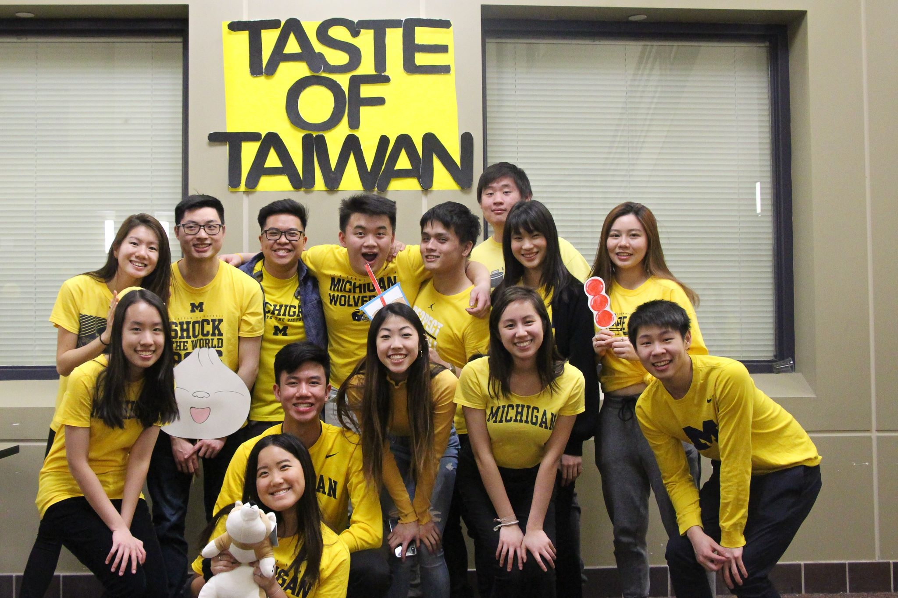

Taste of Taiwan

Overview:
Taste of Taiwan is an annual event put on as a collaboration with TWSA and MTSA where the organizations work together to create a “night-market” like experience. This year, the event took place in East Hall’s psychology and mathematics atriums with the performances taking place in the East Hall lecture hall. The theme was “Keelung’s MiaoKou Night Market (基隆廟口夜市)”, which is known for their colorful yellow lanterns. Upon entering from the math atrium, participants are handed a brochure with a map of all the different foods they can try as well as games they can play.
Goal:
“With Taste of Taiwan, our collective organizations hope to promote our Taiwanese culture as we provide an authentic tour of one of Taiwan’s most beautiful night markets.”
Planning Process
 The event was mostly planned by a board of “committee leaders”. Committee leaders included board members from TASA, TWSA, and MTSA but general members are encouraged to step up and become committee leaders as well. This way, general members get to be more involved with the organization and the planning process. Some examples of committees included Games Committee, Advertising Committee, Entertainment Committee, Decorations Committee, Food Committee, etc. Each committee leader had their own group of other general members they met up with who wanted to be more involved of the TASA planning process.Food
Lu Rou FanMi Fen
Salt + Pepper Chicken and Tofu
Three Cup Chicken
Stir-Fry Cabbage
Wintermelon Tea with Grassjelly
Shaved Ice
Games/Activities
Bottle-Balancing GameThe Incense Game
Chopsticks Skills Challenge
Arizona Ring Toss
Can Knockdown
Pinball
Calligraphy
Photobooth
Performances
RXN Hip-HopRXN Traditional
K-Motion
Konnect
Suri Hou
Interviews:
What is the main purpose of your culture show or the event? Was it more for entertainment value or for cultural significance?“The main purpose of Taste of Taiwan is for cultural significance. Entertainment is more of the performances and it’s a part of Taste of Taiwan but it’s not the main thing. The main thing is the style of the setup, and we have food, so that people can try a little bit of our culture and get prizes that we do get from Taiwan" "
"I think that Taste of Taiwan is the one event that embodies the mission of TASA, it shows some food and some events and it’s an annual event and why we make it so big"
- Lilian Sheu, 2018-2019 TASA Co-President
- Curtis Fang, 2018-2019 TASA Co-President "
What was the decision making process behind what you chose to have in your event? (i.e. focus on food, games, performances) Do you believe this impacted the way people perceived your culture?"It’s tradition and this event has been here for a long time, it helps to know what the event is originally inspired by. Night markets are something that you HAVE to do when you go Taiwan so we try our best to replicate that"
- Lilian Sheu, 2018-2019 TASA Co-President
How do you believe your culture was presented through your event?"I think it was represented well. Food for example, we cater from Asian Legend, which is Taiwanese. The brochures have the name of the foods on it (traditional characters) and even on the food committee, we were trying to brainstorm ideas for venue so that we could get food that was in our budget, but are also things that would see in Taiwan. Especially shaved ice with the shaved ice, which is really big in Taiwan, we were really careful when choosing for toppings this year. This year we did “tang-yuan” which a lot of people didn’t know what it was. The games and cultural booths are also a lot what you would see them in night markets in Taiwan" "
"I think you can see that Taiwan is very focused on food. We’re very famous for our food. At the event, people really enjoyed the food as well so I think compared to other shows, it’s not as emphasized on performances. The performances weren’t very Taiwanese, but the food and activities we made it as close as to what we find in Taiwan. People probably would feel that people are very focused on food and activities."
- Lilian Sheu, 2018-2019 TASA Co-President
- Curtis Fang, 2018-2019 TASA Co-President
What do you think was the most important component of the event? (performances, games, etc)"Food is the bulk of the cost and also a lot of why people are willing to pay for the ticket is because of the food. Other aspects are equally important but food the most important budget wise"
"I’d probably be the food but it’s hard to separate food and activities because we’re trying to create a night market. If I could drop thing, I would drop performances for sure. If I had to choose to drop activities and food, because I feel like you can find similar games all around the world. But the food is such a big part of Taiwanese culture and what we wanted to bring to the event and what ultimately what makes our different so different than the other culture shows."
- Lilian Sheu, 2018-2019 TASA Co-President
- Curtis Fang, 2018-2019 TASA Co-President
Can you talk a little bit about the specific games that you included in the Taste of Taiwan event?"Last year I was surprised to find out that we haven’t done the balloon popping game in the past and I pushed a lot to make that happen. It's where you throw darts at balloons to pop balloons and it's a very quinntessential game at night markets. Rest of the games are things that we’ve done before and some things Taiwanese people play. Ring toss is done at night markets. It's simple, prizes, easy, makes sense. The incense game is cultural, the pulling up bottle game is something that's also unique to night markets. And then the chopsticks game and calligraphy booth are both pretty traditional cultural events as well."
- Max Tsao, 2018-2019 Internal Programming Chair
If you had a theme for the ToT, how did you decide on this theme/what was the importance of the theme?"We chose Keelung Miao Kou Ye Shi. [We chose] between the presidents of the three Taiwanese orgs and the committee leaders, and we finalized in our first or second meeting. Some themes we've done in the past included “Old and New” and “Jiu Fen”, so we just asked for ideas of what are themes that we could represent in a night market, inspired by a certain night market, or after a movie whether it be more traditional / modern / or even zodiac year. We ended up decided on the night market known for yellow lanterns. We thought there would be great decoration ideas and would be how beautiful it would be in East Hall so that's how we chose" "
"Keelung Miao Kou Ye Shi, we picked this theme because obviously a lot of Taste of Taiwan is trying to create this night market feeling. And that's a real night market in Taiwan. By picking this one specific night market, we can make it both original and a lot of decorations can be based on that specific night market. Our night market was based off that specific night market, and it’s based on the yellow lanterns and we were able to reflect that in our advertising, our creative profile pictures, our diag board, and the decorations for the event."
- Lilian Sheu, 2018-2019 TASA Co-President
- Curtis Fang, 2018-2019 TASA Co-President
Can you talk a little bit about the performance aspect of Taste of Taiwan?"The performances were hard to organize because it's hard to get Taiwanese / more Taiwanese culturally performances because there aren’t that many on campus. We also had some difficulties with venue and date and we would have had more Taiwanese performances if it wasn't for that."
- Lilian Sheu, 2018-2019 TASA Co-President
What are some changes you hope to implement for Taste of Taiwan in the future?"Some things were more logistical, but I think generally, bringing in more Taiwanese performances. Our finance chair talked to a woman with a Taiwanese performance group that we can bring in. We have been limited to student performances but we didn’t really think beyond the campus but [in the future] we can look beyond to the broader Taiwanese community in Ann Arbor" ."
"If I could change something about the event, I would change the venue. Historically, we have used east hall and the two atriums to have our activities and games. And while it works, there are venues that could better recreate the feeling of a night market. Night markets are more vertical instead of the two large squares that we have right now. So potentially BSRB. We saw Global Bonanza there, we thought it would be a really great venue"
- Lilian Sheu, 2018-2019 TASA Co-President
- Curtis Fang, 2018-2019 TASA Co-President
Analysis:
We believe the overall gist of the event, including the planning process and event itself aligns with our initial prediction that TASA is very heavily culture and community based. Even though Taste of Taiwan is TASA’s biggest event, it still allowed for plenty of mingling and interaction between general members and attendees of the event. The planning process allowed anyone who wanted to be a part of it to become more involved with the community. There was no interview process to become a “committee leader” and we believe that this aligns with TASA’s goal of making members even more inclusive in the organization and contributes to their vision of creating a “community”. Food is very heavily emphasized and most board members stated it as the most important part of the event, which showed that food is culturally very important in both TASA and Taiwanese culture. And even though some events didn’t seem to be very “cultural” they are still games that are widely played in night markets throughout Taiwan. Some of the games did provide cultural education, such as in the incense game or calligraphy. Incense is largely known as a way for Taiwanese people to connect to spiritual bonds and calligraphy is a huge way that Taiwanese intellectuals communicate. It is also an ancient art form that is well practiced throughout Taiwanese culture (“Digital Taiwan”, 1). Although due to unforeseen circumstances, the popular game of “balloon popping” was not present, it was initially planned to be in the event. The balloon popping game is one of the most popular games in Taiwan and is often found several times throughout a single night market. Based on these factors, it is clear that the booths within Taste of Taiwan did hold cultural significance. Some attendees did, however, state that they were slightly confused by a few of the games and found it difficult to pinpoint their cultural meaning. As a result, one things organizers could have done to improve this is to print more information regarding the exact significance behind each booth as well as potentially used other platforms to educate attendees as well.Compared to huge KSA events, the attendance was slightly lower (~330) and people were able to interact with one another as they walked around the atriums and waited in lines for food. The setting of the event was relatively lively and the performances were also much more interactive than that of KSA. Overall, board members agreed that the event was pretty successful and helped in educating the general public about Taiwanese culture.